Cats are small and especially sensitive to certain foods. Here are 15 to keep well away from your cat, why each is dangerous, and what to do if your cat eats one.
⚠ If your cat ate something dangerous
Act immediately — don't wait for symptoms.
- Call your vet or a pet poison helpline right away (ASPCA Animal Poison Control: 888-426-4435).
- Note how much was eaten and when.
- Do not induce vomiting unless a professional tells you to.
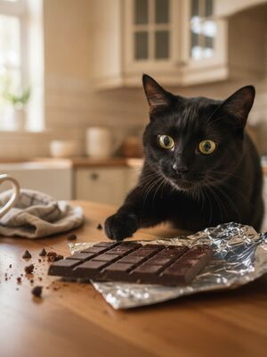
1. Chocolate Never feed
Cats are also highly sensitive to theobromine and caffeine in chocolate. Any amount should be treated as an emergency.
See the full guide on cats & chocolate →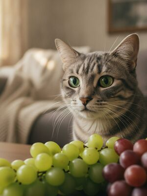
2. Grapes Never feed
Out of caution, cats should never eat grapes — the same unpredictable kidney risk seen in dogs may apply.
See the full guide on cats & grapes →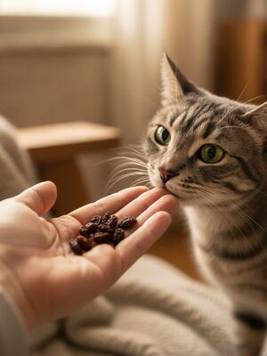
3. Raisins Never feed
Never feed raisins to cats. Treat any ingestion as a potential emergency and call your vet.
See the full guide on cats & raisins →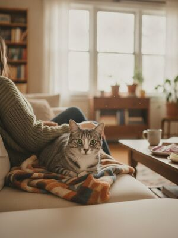
4. Onion Never feed
Cats are even more sensitive than dogs to onion toxicity, which destroys red blood cells.
See the full guide on cats & onion →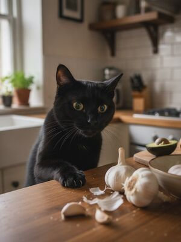
5. Garlic Never feed
Garlic is highly toxic to cats and can cause life-threatening anemia even in small amounts.
See the full guide on cats & garlic →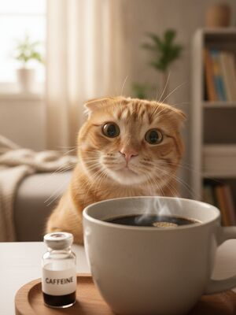
6. Coffee & caffeine Never feed
Caffeine over-stimulates a cat’s heart and nervous system. Keep all coffee and tea well out of reach.
See the full guide on cats & coffee & caffeine →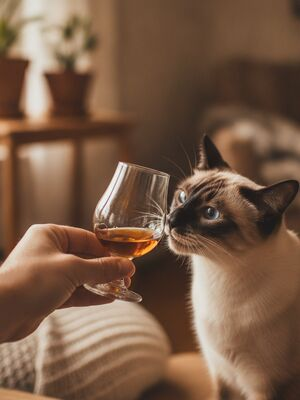
7. Alcohol Never feed
Cats are tiny and extremely sensitive to alcohol — even a small spill can be dangerous.
See the full guide on cats & alcohol →8. Star fruit Never feed
Star fruit is rich in oxalates that can harm a cat kidneys. It should not be fed.
See the full guide on cats & star fruit →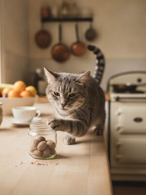
9. Nutmeg Never feed
Nutmeg contains myristicin, which is toxic to cats. Keep all nutmeg-spiced foods away.
See the full guide on cats & nutmeg →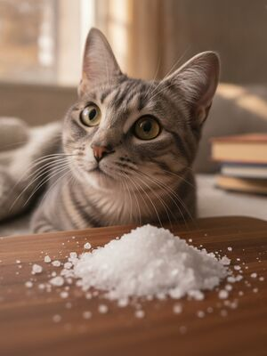
10. Salt Never feed
Cats are small and very sensitive to salt. Salty foods can cause dangerous sodium poisoning.
See the full guide on cats & salt →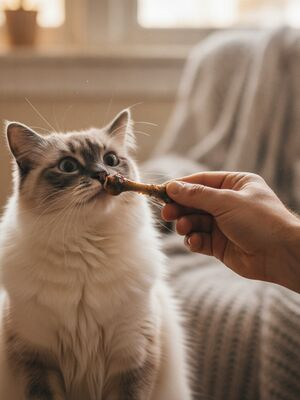
11. Cooked bones Never feed
Cooked bones splinter easily and can cause choking or internal injury in cats. Never feed them.
See the full guide on cats & cooked bones →12. Raw bread dough Never feed
Raw dough rises inside the stomach and produces alcohol as it ferments — dangerous for cats. Never feed it.
See the full guide on cats & raw bread dough →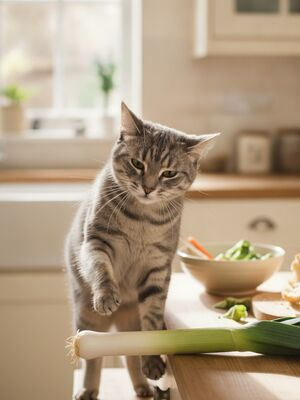
13. Leek Never feed
Leeks are highly toxic to cats, which are very sensitive to allium vegetables. Never feed them.
See the full guide on cats & leek →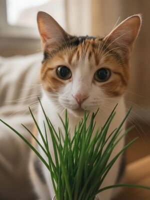
14. Chives Never feed
Chives are toxic to cats and can cause life-threatening anemia. Keep them away entirely.
See the full guide on cats & chives →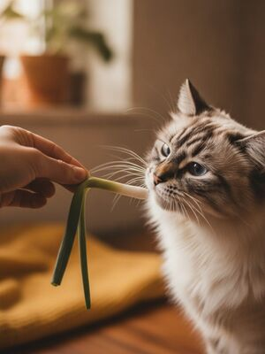
15. Green onion Never feed
Green onion is toxic to cats and can cause dangerous anemia. Never feed it.
See the full guide on cats & green onion →Other guides you'll like
Foods toxic to dogsSafe fruits & veggiesFoods cats can't eatThanksgiving dangers
By the CanMyPet Editorial Team · Reviewed against ASPCA Animal Poison Control, the American Kennel Club (AKC) and Pet Poison Helpline · Last updated June 2026.